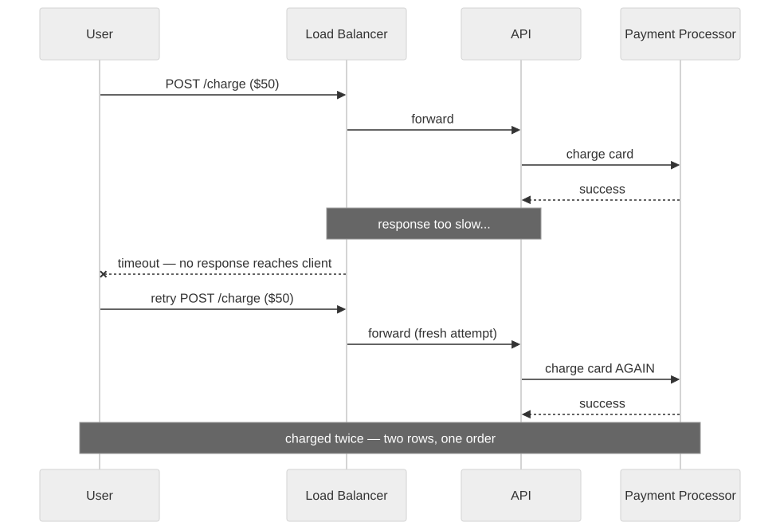
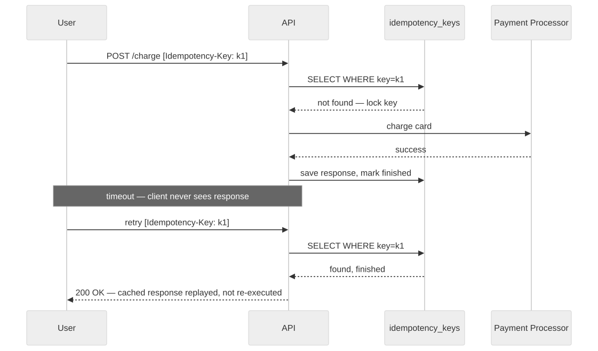

6 — Nothing is idempotent and everything runs twice
The happy path is the only path your app was written for. At scale, the happy path is the rare one.
Exactly-once delivery isn't an engineering gap you can close with enough effort — it's a theorem. The Two Generals problem makes it provably impossible over an unreliable network, and every mainstream system you're already using has made its peace with that: SQS, Kafka's defaults, every webhook provider, every browser's retry behaviour all choose at-least-once delivery instead. Duplicates aren't a bug in that infrastructure — they're documented, intended behaviour. The bug is code that was never written to expect them. Four paths produce duplicates in almost every vibe-coded CRUD or payments app: queue redelivery, webhook retries, a load balancer or client timing out mid-write, and a user double-clicking submit.

The charge succeeded the first time. The timeout just happened after that, not because of it.
There's a specific, well-measured reason generated code misses this:
a robustness study found 43.1% of LLM-generated code is less robust
than the equivalent human-written reference code, with over 90% of
that gap coming from missing guard checks — and 70% of the omissions
sitting on the very first line where the check belonged. The most
telling detail in that research: in 63–69% of the missed cases, the
model's own token probabilities had ranked the missing
if statement in its top three choices. It wasn't that
the model didn't know the check belonged there. It skipped it
anyway. And the scale of who needs this: Stripe itself ships an
idempotency-key mechanism specifically to survive retries from its
own SDK. If a payments company at their scale needs that layer, your
MVP calling their API without one hasn't avoided the problem — it
just hasn't met it yet.

Same timeout, same retry. The second request finds a finished key and replays the result instead of repeating the charge.
Retry windows aren't a corner case either — they're the vendor's documented default behaviour. Stripe retries webhooks for up to 3 days. Shopify retries 8 times over 4 hours. GitHub retries 3 times within an hour and requires a 2xx response within 10 seconds — which means even a handler that's merely slow but ultimately successful still triggers a duplicate delivery. This isn't hypothetical at any scale, either: publicly reported duplicate-transaction incidents at Chase, Commonwealth Bank Australia, and NBT Bank all involved ordinary retry behaviour meeting no deduplication backstop, not an attacker. If banks ship this bug under that much scrutiny, an MVP calling a payment processor for the first time will too, unless it's designed not to.

The unique constraint is the backstop for when application logic eventually lets a duplicate through — because it will.
The fix is idempotency keys on every write endpoint — client-supplied or derived from the event ID — plus a unique constraint in the database as the last line of defence, because application logic will eventually let one through on its own. Design every handler as if it will run twice. It will.
If you've shipped fast with AI tools and want a second pair of eyes before it goes further, that's exactly what a vibe code audit is for.